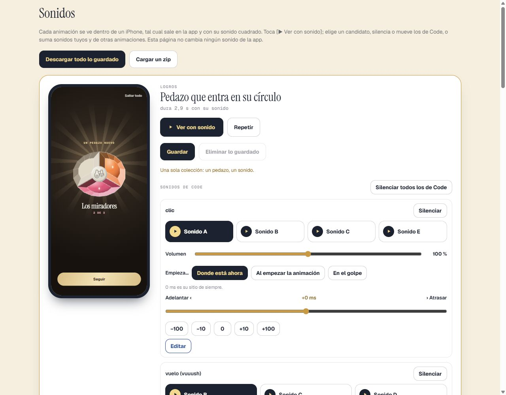
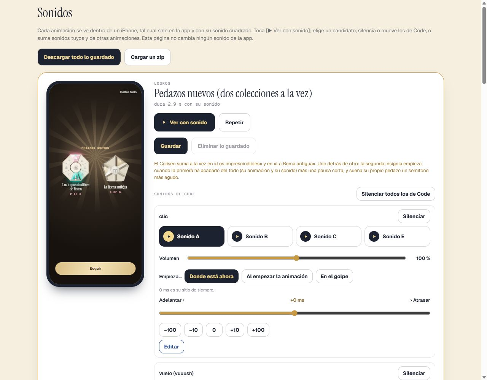
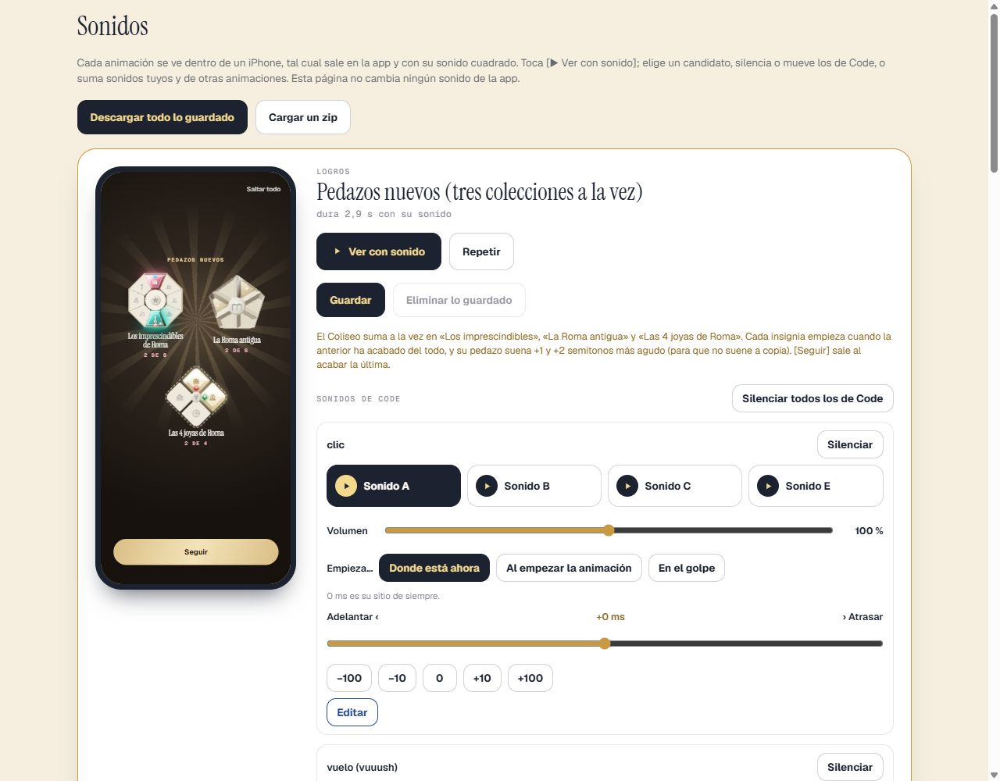
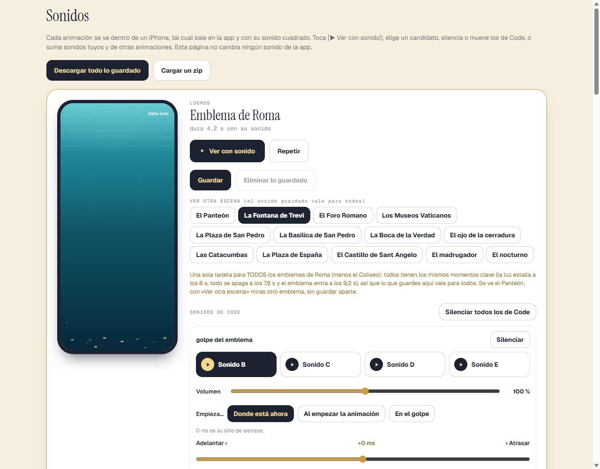
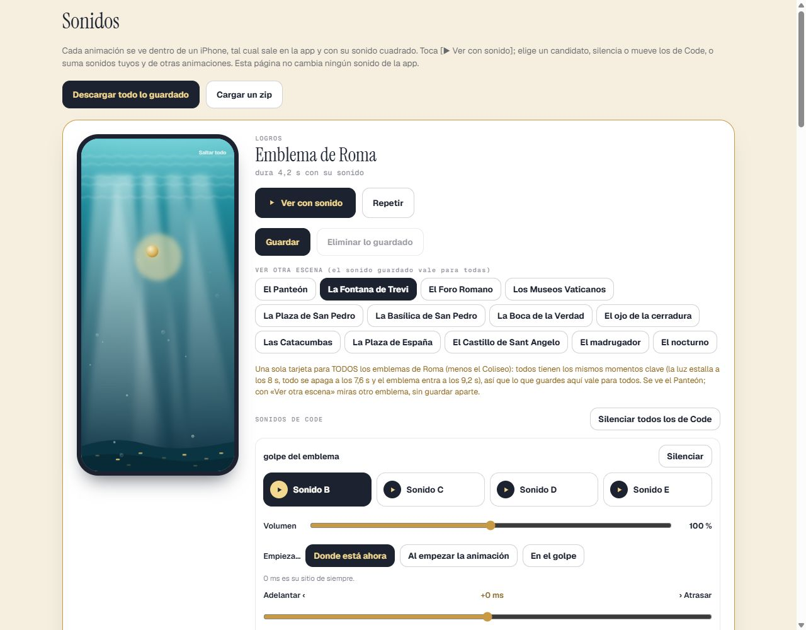
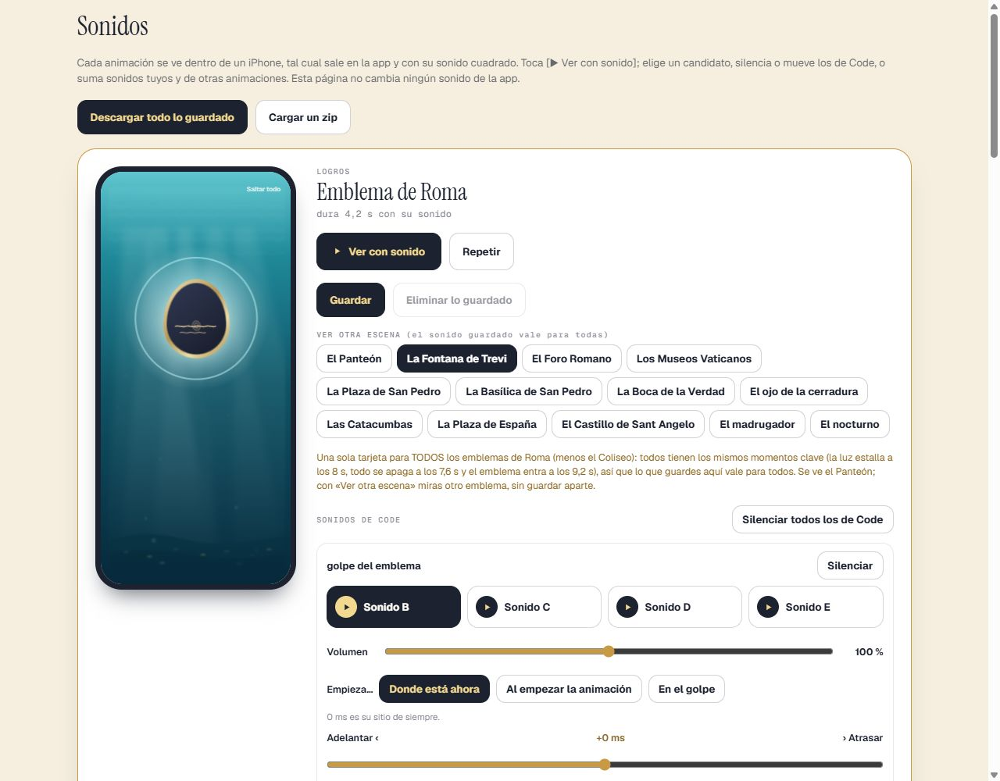
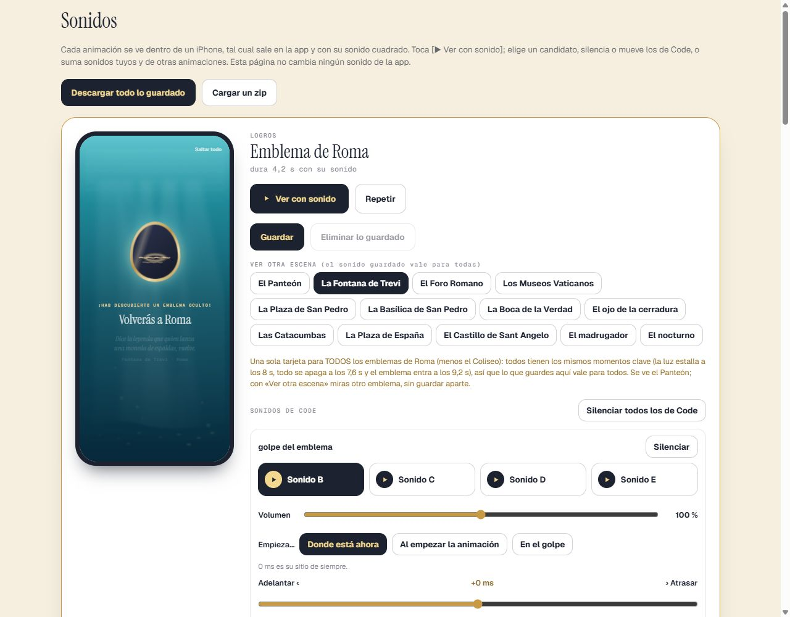
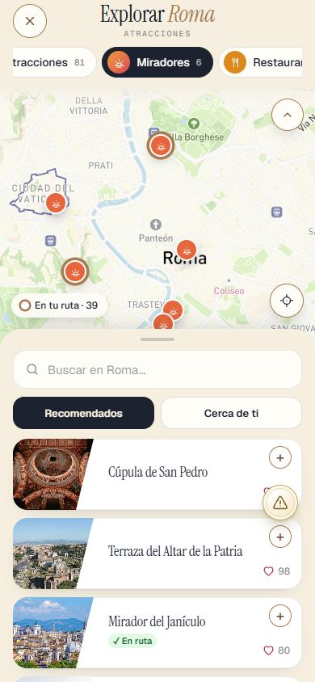

La migración 0092 ya está aplicada (Eric pasó el COMPROBAR con todo en true).
| # | Qué | Antes | Después | Capturas |
|---|---|---|---|---|
| 1 | Pedazos con varias colecciones | Cada insignia empezaba 1,6 s después de la anterior y el pedazo sonaba una sola vez. | Una detrás de otra: la siguiente empieza cuando la anterior ha acabado del todo (animación 2,0 s y sonido 3,3 s) más 0,2 s: hueco de 2,6 s. Cada insignia hace sonar su pedazo; la 2.ª +1 semitono y la 3.ª +2 (tope +4). [Seguir] sale al acabar la última. El hueco sale de tiempos.ts, no de un 1,6 fijo, y sigue al sonido que Eric guarde en el estudio. |    |
| 2 | Fontana de Trevi | Rompía la regla: dim 8,1 · fl 8,45 · x 9,9… | Como el resto de Roma: dim 7,6 · fl 8 · x por defecto. Su dibujo (moneda, brillo y apagado) se adelantó 0,45 s para seguir. Fotogramas a los 4,5 · 6,8 · 7,7 · 8,4 y 9,8 s: |     |
| 2b | Estudio: emblemas | Una tarjeta por emblema (Panteón, Coliseo, Escena de Roma, Escena de Lanzarote). | Tres: «Emblema de Roma», «Emblema de Lanzarote» y «Coliseo». Con «Ver otra escena» miras cualquiera de las 13 de Roma o las 11 de Lanzarote dentro de su tarjeta, sin guardar aparte. | |
| 3a | Coliseo «por fuera» en un día propio | Salía «por fuera» sin decir por qué. | Dice «Por fuera · ya lo ves por dentro el día 2» (el día real, en la tarjeta y en la ficha). Si el viaje no lo ve por dentro ningún otro día, sale por dentro. Vale para cualquier sitio que pasa a verse por fuera por esa regla. | |
| 3b | Pines de Explorar en Roma tras pasar por DÍAS | Todos los pines salían ocultos. | Era un fallo real, un viajero podía verlo (DÍAS → Explorar). Un pintado del mapa compartido llegaba después de desmontarse la pantalla y dejaba pines «zombi» ocultos, y la pantalla viva esperaba un aviso del mapa que no volvía. Arreglado en StopsMapView.tsx (pintado cancelable; los pines no esperan al estilo del mapa). |  |